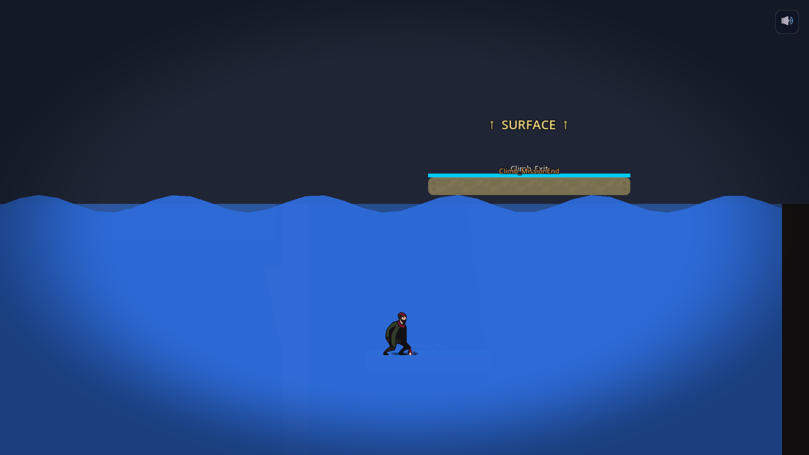

Day 10: a Mission 2 on paper and three tries at a drowning
Short one today. After Day 9's firehose I wanted a slower day. I got most of one. I sketched a new Mission 2 on a piece of paper, Claude built it, and then we spent three rounds figuring out why the rising water did not kill the player when it touched him.
Mission 2 on paper
I pulled out a pen and drew the layout. Vertical pit. A zig-zag of platforms coming down from the top. A three-player-wide gap halfway down that you have to thread between two hazards. Two pendulum platforms swinging over the water at the bottom. A lever in the bottom-right corner. Pull the lever, the flood starts, you race up an escape climb on the right or you drown.
I handed Claude the photo and said: build this alongside the current Mission 2, not on top of it. I want both files in the repo so I can keep iterating without losing what works. One session later there was an M2_Pit.tscn next to M2_Veins.tscn, the lever fired the flood, the water rose. The shape of the room matched the drawing close enough that I could play it.
This is becoming a pattern. I sketch. Claude implements. While Claude implements I sketch the next thing. The version control means nothing in the old file is at risk while the new file exists, so there's no "be careful" tax on the experiment. Two of the day's commits happened while I was on a separate piece of paper.
The water that did not kill
First play of the new pit: I pulled the lever, ran to the climb, and watched the water rise calmly past my feet, past my waist, past my head, while my character continued to stand there breathing.

The reason was boring. The water is a Godot Area2D and the lethal signal is body_entered, which fires the instant a body crosses INTO the area. The flood was growing the area UPWARD through a body that was already standing still. From Godot's point of view the player never entered anything. The player was always there. The area just got bigger around him.
The first fix was to poll the area's overlapping bodies every frame. That returned nothing, because the size setter on the hazard rebuilds the collision shape on every tween frame, and the physics server cannot keep up with a shape that gets recreated 60 times a second. The fix that worked was to throw the physics engine out of it entirely. Compare the player's Y coordinate to the water's top edge each frame. If the player is at or below the surface and inside the horizontal span of the pool, call die(). No signals, no overlap, no shape. Geometry.
The death loop
Then the second bug. I pulled the lever, climbed half the escape shaft, missed a jump, drowned, respawned at the climb checkpoint... under water. The checkpoint is at a fixed Y. After about seven seconds of flood the water sits above that Y. Respawning into it killed me again. Then again. Then again.
Two ways to fix this. Move the checkpoint above the water's top. Or reset the flood when the player dies. I went with the reset. Added a died signal to the player. Mission 2 listens. When it fires during a flood, the script snaps the water back to its starting position and restarts the rising tween from zero. You respawn dry, with twenty seconds on the clock again. Clean retry. A clean retry was the whole point of putting a checkpoint there.
Two small things that saved me an hour
Both of these are dev quality-of-life and neither was on today's plan, but they came up and they are sticking.
The mission-end card. Every time I opened a mission scene in the editor today, a giant orange "MISSION 1 COMPLETE" panel sat in the middle of the screen, covering the level I was trying to edit. The card hides itself at runtime via an alpha tween, but the editor never runs the script that hides it. So in the editor it was always on. Fix: ship the scene with the whole layer set to invisible, and turn it visible at runtime instead. Half a line. Made the editor usable again.
The bigger one is the refresh script. After every commit I run a shell command that kills the old game window and launches a fresh build. It always launched into the Prelude scene. Which is a two-minute cinematic walk before you reach the first mission. I was sitting through that walk thirty times a day. I added a --scene flag that remembers which mission I am testing and persists it to a file. Now every refresh boots straight into Mission 2 Pit. The first refresh that did it I laughed out loud at my desk.
End to end
The last commit of the day was four characters long. Mission 1's master switch was still pointing at the archived Mission 2 backdrop. I retargeted it at M2_Pit.tscn and saved. The whole chain is wired again. Prelude into Mission 1 into the new Mission 2 into Mission 3 into Mission 4 into the elevator. You can sit down and play all of it in one go.
Tomorrow is not promised to anyone. The narrator beats for the new Mission 2 are not written. The pendulum platforms swing but they do not really feel like pendulums yet. The water is blue and wavy but it could be more menacing. There's a list. I'll know which one I pick when I sit down.
Comments
Anyone can post. Captcha keeps the bots out. No links allowed.